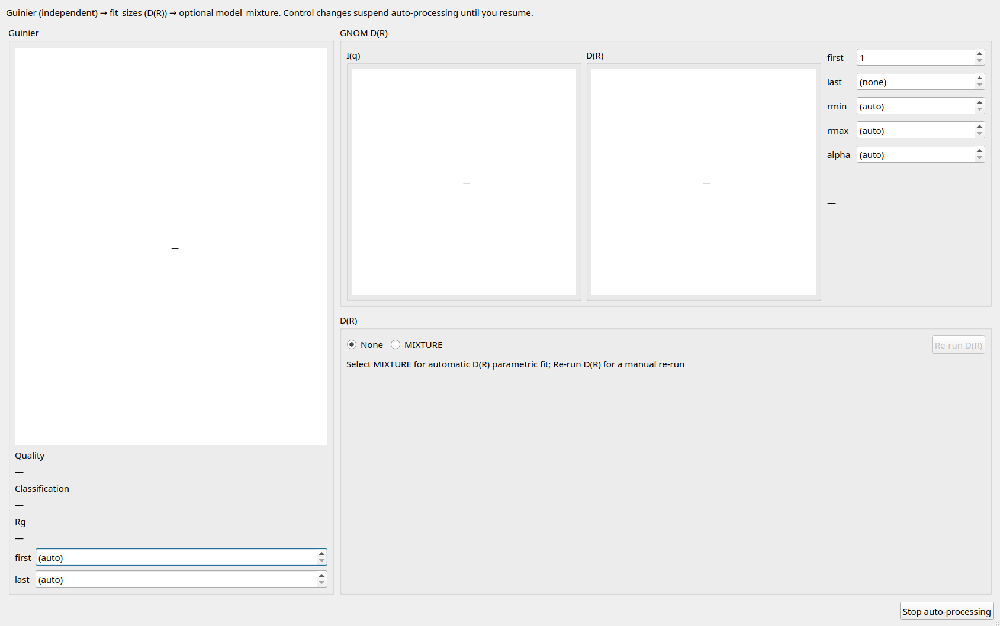
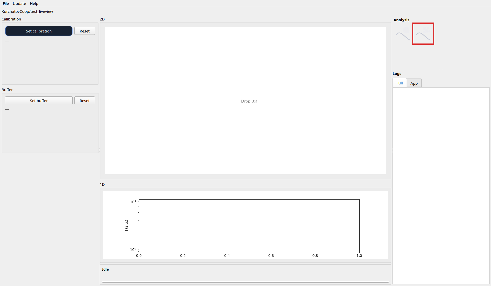

Open this window from the right-column polydisperse icon. While it stays open, new TIFFs run
Guinier → fit_sizes (D(R)) → optional MIXTURE automatically. Closing the window disarms that chain.
Guinier here is independent of the monodisperse window and is stored under guinier_poly/.
Polydisperse Guinier quality is often poor; that is expected and does not feed fit_sizes.
Parameter edits pause auto-processing until you Resume auto-processing.

Main window right → polydisperse icon → window opens (armed while open).

Edit first / last / rmin / rmax / alpha in GNOM D(R) → fit_sizes re-runs (debounced) for the current profile → Resume auto-processing if paused.
Under the mixture pane, choose MIXTURE (vs None) → set model / ranges as needed → new TIFF
jobs include model_mixture. Use Re-run D(R) for the current profile. r_max /
poly_max may start as (auto) and update after the run.
Stop auto-processing → Resume auto-processing when ready.
guinier_poly/<stem>/ — Guinier region YAMLfit_sizes/<stem>/ — GNOM .out, D(R) CSV, quality YAMLmixture/<stem>/ — per-model dirs, mixture_results.csv (when MIXTURE enabled)